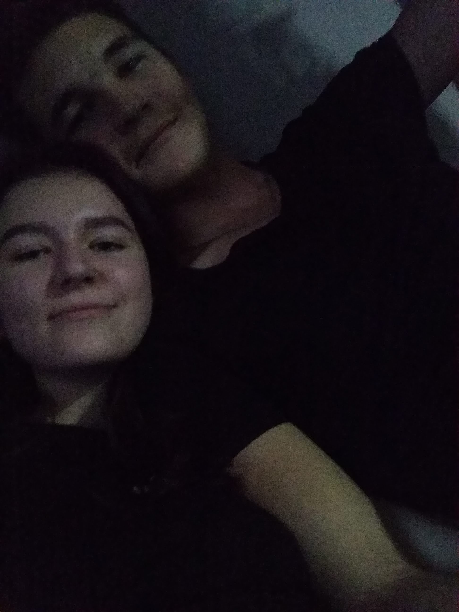

С того момента во мне включился Шерлок: я начала вспоминать и анализировать. Почти сразу я поняла, что ты довольно скромный и стеснительный, по крайней мере кажешься таким. Было странно, что ты не написал первым… Ну оло, я же девушка!!! Девушки первые не пишут… обычно… Я не обломалась. Слишком уж интересно было пообщаться с тобой и узнать ближе.
!СПОЙЛЕР! Не разочаровалась !СПОЙЛЕР!
Почему то, я боялась показать себя с плохой стороны, мне было неловко говорить о своих вредных привычках, порой грызла совесть за мат, ведь ты не материшься чуть ли не вообще. На пикнике, 17 сентября, я уже во всю включила кошку, мне хотелось, чтобы ты не просто увидел во мне интересного собеседника, но и заметил симпатичную девушку с тонкой натурой. Каждый твой взгляд был маленькой победой, а уж как ликовала роковая соблазнительница во мне, когда ты предложил меня проводить… Но, как только я осталась с тобой один на один, она куда-то съебала. Я стеснялась и краснела, боялась сказать «не то» и сделать «не так», хотя может вида и не подавала… На прощание мне очень хотелось тебя обнять, но я побоялась... А ты, такой стеснительный и скромный, нет. Естественно, я увидела в этом знак. Как иначе? Ты же обнял меня, ну! По-моему, все очевидно… Я ехала и всю дорогу думала об этом, о наших разговорах, о тебе… Теперь, приходя к вам в гости, мне хотелось, как можно скорее, уйти лишь потому, что это очередная